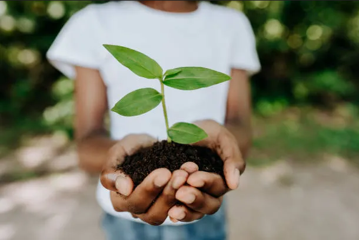
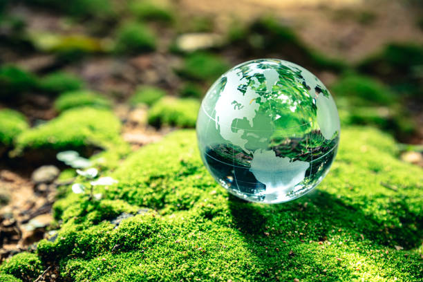

🌍 Happy Earth Day! 🌱
Earth Day is celebrated every year on April 22 to raise awareness about environmental protection and sustainability.
Earth Day is an annual celebration that honors the achievements of the environmental movement and raises awareness of the need to protect Earth’s natural resources for future generations. Earth Day is celebrated on April 22 in the United States and on either April 22 or the day the spring equinox occurs throughout the rest of the world.
-by Adwaid
🌿 Earth Day Facts
| Facts |
Know More |
| Earth Day began in 1970 |
It was started by U.S. Senator Gaylord Nelson |
| More than 1 billion people participate |
It's the largest secular civic event in the world |
| Over 190 countries celebrate it |
It's truly global 🌍 |
DID YOU KNOW
78%
Of marine mammals are threatened by accidental deaths,such as getting caught in
waste and other debri thrown in water bodies
25,000
Trees are cut down everyday to produce toilet paper
5,000,000
Tons of oil produced every year ends up in the ocean
4000
Years is how long it takes for a glass bottle to decompose
HOW IT STARTED
Earth Day is celebrated every year on April 22nd.
It started in 1970.
The first Earth Day was held in 1970 in the U.S. It was sparked by growing concern over pollution and the environment, especially after a major oil spill in California.
It was initiated by Senator Gaylord Nelson from Wisconsin. He wanted to bring environmental issues into public conversation.
There was a massive participation;
The first Earth Day saw over 20 million Americans participate — schools, colleges, and communities all joined in.
Reduce
the amount of garbage you make
Reuse
things instead of throwing them out
Recycle
paper, plastic, glass and aluminium
WHAT CAN YOU DO?
At home
start a compost pile
take short showers
turn off the lights when not using them
At School
• use reusable water bottles
• donate school supplies
• recycle old papers
As a society
• buy local foods
• clean up litter
• plant a garden

